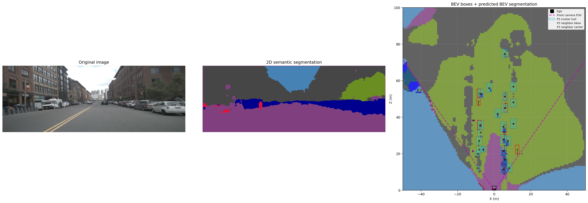

Profile
About

Adibuzzaman Rahi
I am a PhD candidate in Mechanical Engineering at Purdue University, working on perception for autonomous ground vehicles in off-road, GPS-challenged environments. My research focuses on 3D object detection, semantic segmentation, and radar–camera sensor fusion for robust navigation in unstructured terrain.
I have 4+ years of experience designing deep learning pipelines, optimizing models for real-time deployment, and evaluating perception systems using metrics such as mAP and mIoU. I also serve as a Graduate Teaching Assistant and Lab Instructor, mentoring undergraduate students in autonomy, robotics, and control.
Projects
Research & Projects
Radar–Camera Fusion for Off-road Navigation
Ongoing research on multi-modal perception for off-road autonomous vehicles, combining monocular camera and automotive radar to build BEV scene understanding and traversability maps. This includes hierarchical proposal-conditioned BEV segmentation and terrain classification for GNSS-free navigation.

Deep Semantic Segmentation Model and Dataset for Off-Road Terrain
I developed an off-road semantic segmentation dataset of 1,414 images by refining labels from the Yamaha–CMU Off-Road Dataset and augmenting synthetic samples to balance terrain classes. Building on this dataset, I designed a ResNet34–U-Net fusion architecture that achieves 87% accuracy at 24 Hz and generalizes strongly to YCOR, Rellis-3D, and RUGD benchmarks without fine-tuning. This demonstrates robust feature representations for diverse off-road environments and supports real-time traversability analysis for autonomous ground vehicles.

Predictive Enhancement of Detection (PrED)
I created PrED, a predictive enhancement algorithm that combines object detection with Kalman filtering and a Predictability Index to recover low-confidence and missed detections in data-limited scenarios. Integrated with camera-based detectors in moving off-road tests, PrED delivers an 11% improvement in detection accuracy and a 7% gain in MOTA, boosting temporal consistency and reliability of perception pipelines in challenging environments.

Physics-based Radar Sensor Modeling in Unreal Engine
I built a high-fidelity automotive radar sensor model in Unreal Engine using C++ that couples physics-based signal behavior with point cloud processing and 3D grid-DBSCAN clustering. The simulated sensor achieves 89% correlation with real radar measurements, enabling sim-to-real validation of perception and control algorithms and providing a controllable testbed for sensor fusion research.

Additional Work
- Real-time crop row detection using computer vision for agricultural robots (field-tested in maize cultivator prototypes).
- ROS/ROS2-based autonomy stacks integrating radar, camera, LiDAR, and IMU for ground vehicle navigation.
- Model optimization and benchmarking for embedded deployment and safety-aware perception (SOTIF-aligned workflows).
Publications
Publications
For the latest list of publications, please see my Google Scholar profile.
Selected work includes research on semantic segmentation for autonomous systems, crop row detection for precision agriculture, and sensor fusion methods for off-road ground vehicles.
Teaching
Teaching & Mentoring
I have taught and mentored 50+ students through lab instruction and graduate teaching assistant roles at Purdue University, covering courses such as Control Systems, Materials, Heat Transfer, and Dynamics.
I also previously served as a Lecturer at Sonargaon University in Bangladesh, delivering core Mechanical Engineering courses and supervising student projects in robotics and control.
Contact
Contact
The best way to reach me is via email (listed on my CV) or through LinkedIn.